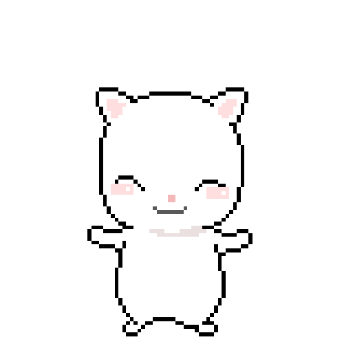
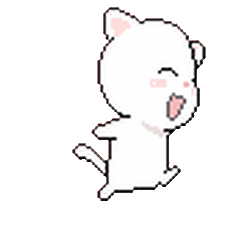
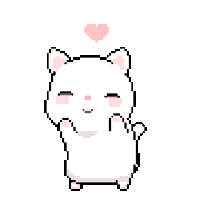
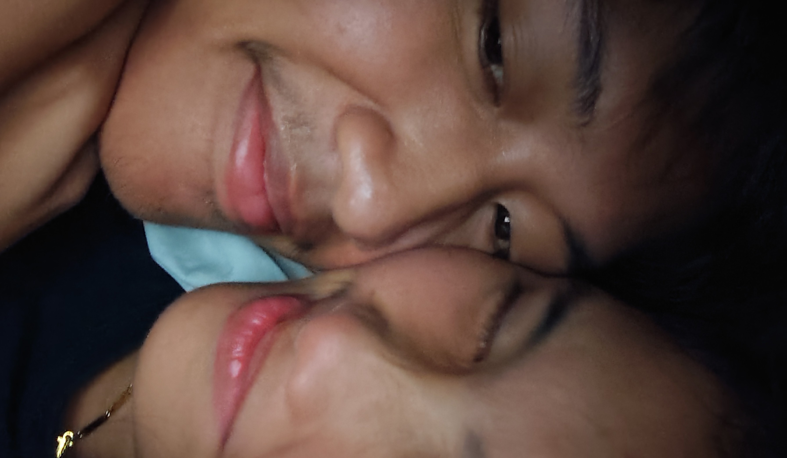
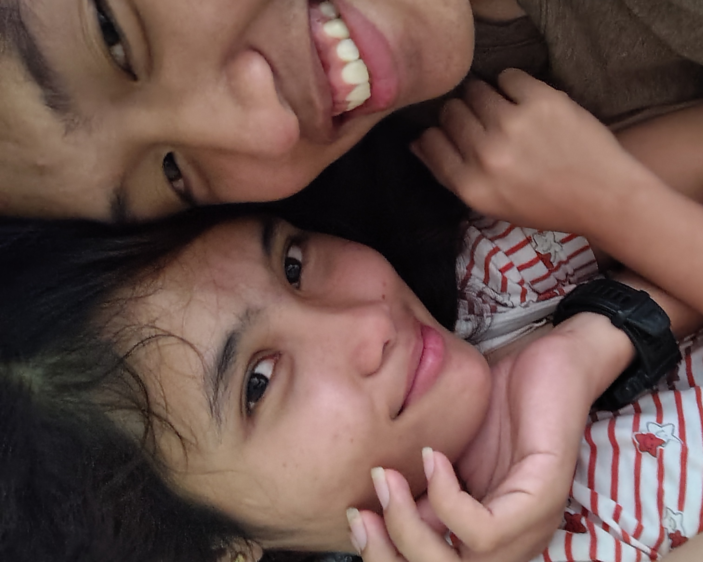

Happy 11th Monthsary Mah Love 💚
For you, what would i pick?



You are my World 🌌
You are my world, Janelle

🌷🌹🌼🌸💐🌻✨ If I could, I would hand these flowers to you in person (Kung pwede lang malusot sa cellphone an kamot haha) bitaw and it makes me want to capture a picture of you nanaman. Since for now we can't always go out and see each other, please I hope you accept these virtual flowers as a small reminder of how much you mean to me. Although uhmm pinaagi lang ni through coding mah love. Each flower represents saakong love for you po, an appreciation, and ang gratitude for having you in my life. Thank you for bringing so much happiness, warmth, and color into my world. Parehas anang flowers bloom and grow, my love for you po continues to blossom with every passing day. I may not be the perfect guy for you, but I can be the best guy for you po.

Anyways, mah love, monthsary na nato. Time flies so fast, right? Today marks another chapter about us, and I honestly can't put into words how grateful I am to have you, in my life po. Been drafting this message since june 29. Sa tanang gi agian nato, every smile, every laugh, every challenge, and every moment we've shared, naging one of the most important parts kana talaga saakong mundo..Thank you for choosing me every single day. Thank you for your patience, your understanding, your love, and your constant support. Thank you for staying even during the days when things weren't easy na about us. Dili man perpekto atong relasyon mah love, pero tinuod unsay naa saato. And that's what makes it so special to me, it means everything a lot to me and I appreciate that so much about you. We've grown together, learned from our mistakes, and continued loving usat usa through it all. I made all this for you. I know it might you feel don't want something celebrate about our day, I understand. I just want you to know that I love you, and I will always be here for you, no matter what. Be strong, be brave, be patient lang hah, and always have faith in us, okay? Please po. With Papa God, everything is possible. He is always gracious and always will be. There will be days nga lisud talaga, exhausting, and frustrating. But no matter what days may come, always remember we face them side by side. Whatever problems we may have, we'll fix them together hah. I will always be with you, Janelle. I will always be on your side. Kakampi ko nimo sa tanang pagsubok. I will always be the first person to be there for you, the one who's always going to believe in you, even when others don't. I'm not going anywhere, so don't worry hah. You will always have me, even if you don't ask. I'll always come to you, even if you don't ask. I'll always be there for you, even if you don't ask. I hope, Janelle, that despite all the times I've hurt you, ma feel nimo, bis gamay lang, how genuine ang akong pag-love for you truly. I may have lost the trust you once had in me, but I want you to know that I'm trying my best to become a better person every day. I may not be perfect, and I may not be mature enough. Sometimes I may not be able to meet your expectations. There are times I disappoint you, make mistakes, do crazy things that make you feel bad, ... and the type of guy who always messes things up. Please just know Janelle, cgehan nako og huna-huna ang mga butang nga akong nabuhat, every single day. I'm doing my best to improve, to grow, and to be more mature pa, for you po. And Janelle, I want you to know I am one of those people who silently cheers for you. Not to impress you. Not because I expect anything in return. But because I've seen the goodness in you, and I genuinely want life to be kind to you. I want your dreams to come true. I want you to heal from things you never talk about. I want you to become everything you were meant to be. You have a kind heart, a gentle soul, and you continue to choose goodness despite everything you've been through and that is something I truly admire about you, Janelle. You deserve every good thing that's coming your way. And even on the days when you doubt yourself, just know that someone is here, quietly and loudly, cheering for you, and that someone is me. As a simple guy, all I can truly offer you is my loyalty, my presence, and my love. I will always be with you, pirme, like I always do. My heart will always belong to you. Happy 11th Monthsary to both of us Mah Love Princess Janelle.